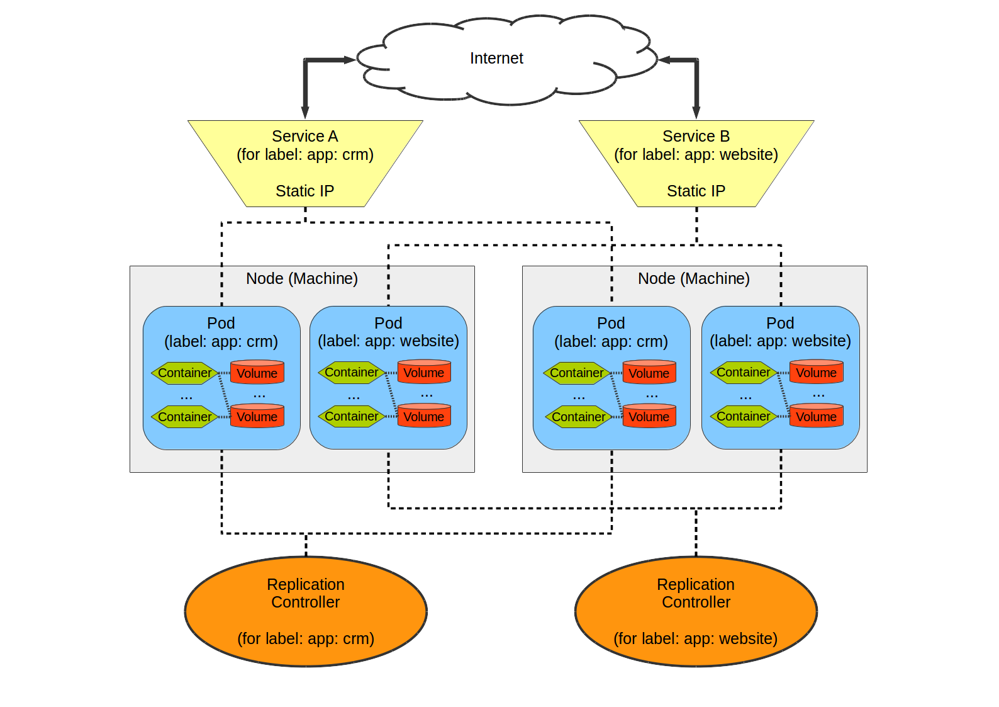

Catalyst
Intro to Docker
Presented by Travis Holton
Administrivia
- Bathrooms
- Fire exits
This course
- Makes use of official Docker docs
- Based on latest Docker
- A mix of command line and theory
- Assumes no prior Docker knowledge
- Assumes familiarity with the linux shell
- Assumes we are using ubuntu 14.04 (trusty)
Aims
- Understand how to use Docker on the command line
- Understand how Docker works
- Learn how to integrate Docker with applications
- Learn ops and developers can use Docker to deploy applications
- Get people thinking about where they could use Docker
Setup
Fetch course resources
$ git clone \
https://github.com/catalyst-training/docker-introduction.git
$ cd docker-introduction$ cd ~/docker-introduction
$ ls- Slides for Reveal.js presentation
- docker-introduction.pdf
- Ansible setup playbook
- Sample code for some exercises
Ansible
- Some of the features we will be exploring require setup. We'll use ansible for that.
- Python based tool set
- Automate devops tasks
- server/cluster management
- installing packages
- deploying code
- managing config
Setup Ansible
$ git clone https://github.com/catalyst/catalystcloud-ansible.git$ cd ~/catalystcloud-ansible
$ ./install-ansible.sh
.
. <stuff happens>
.
$ source $CC_ANSIBLE_DIR/ansible-venv/bin/activate- Installs python virtualenv with latest ansible libraries
- We'll be using this virtualenv for tasks throughout the course.
Setup Docker
- Follow instructions on website for installing
- If you are using Ubuntu, use the ansible playbook included in course repo
$ cd docker-introduction
$ ansible-playbook -K ansible/docker-install.yml \
-e ansible_python_interpreter=/usr/bin/python-
This playbook installs:
- latest Docker Community Edition
docker-compose- Note: you might need to logout and login again
Fetch and run slides
$ docker run --name docker-intro -d --rm \
-p 8000:8000 heytrav/docker-introduction-slidesFollow along with course slides: http://localhost:8000
Introduction to containers
What is containerization?
- A type of virtualization
- Difference from traditional VMs
- Don't replicate entire OS, just bits needed for application
- Run natively on host
-
Key benefits:
- More lightweight than VMs
- Efficiency gains in storage, CPU
- Portability
Benefits of Containers: Resources
- Containers share a kernel
- Use less CPU than VMs
- Less storage. Container image only contains:
- executable
- application dependencies
Benefits of Containers: Decoupling
- Application stack not coupled to host machine
- Scale and upgrade services independently
- Treat services like cattle instead of pets

Benefits of Containers: Workflows
- Easy to distribute
- Developers can wrap application with libs and dependencies as a single package
- Easy to move code from development environments to production in easy and replicable fashion
Introduction to Docker
The Docker Platform
What is Docker?
- High level
- An open-source platform for creating, running, and distributing software containers that bundle software applications with all of their dependencies.
- Low level
- A command-line tool for programmatically defining the contents of a Linux container in code, which can then be versioned, reproduced, shared, and modified easily just as if it were the source code to a program
Docker popularity
- Linux containers are not new
- FreeBSD Jails
- LXC containers
- Solaris Zones
- Docker is doing for containers what Vagrant did for virtual machines
- Easy to create
- Easy to distribute
Docker workflow
- Developer packages application and supporting components into image
- Developer/CI pushes image to private or public registry
- The image becomes the unit for distributing and testing your application.

Docker Portability
- Most modern operating systems
- Linux (RHEL, CentOS, Ubuntu LTS, etc.)
- OSX
- Windows
- Lightweight Docker optimized Linux distributions (CoreOS, Project Atomic, RancherOS, etc.)
- Private clouds (OpenStack, Vmware)
- Public clouds (AWS, Azure, Rackspace, Google)
First Steps with Docker
Docker version
$ docker --version
Docker version 17.03.1-ce, build c6d412eCurrent version scheme similar to Ubuntu versioning: YY.MM.#
Get command documentation
- Just typing
dockerreturns list of commands - Comprehensive online docs on Docker website
$ docker<ENTER>
Usage: docker COMMAND
A self-sufficient runtime for containers
Options:
--config string Location of client config files (default "/Users/travis/.docker")
-D, --debug Enable debug mode
--help Print usage
.
.Basic client usage
docker command [options] [args]
- Calling any command with
--helpdisplays some docs
Exercise: View documentation for docker run
$ docker run --help
Usage: docker run [OPTIONS] IMAGE [COMMAND] [ARG...]
Run a command in a new container
Options:
--add-host list Add a custom host-to-IP mapping (host:ip)
-a, --attach list Attach to STDIN, STDOUT or STDERR
--blkio-weight uint16 Block IO (relative weight), between 10 and 1000, or 0 to disable (default 0)
--blkio-weight-device list Block IO weight (relative device weight) (default [])
.
. Search for images
docker search [OPTIONS] TERM
| Option | Argument | Description |
|---|---|---|
| -f, --filter | filter | Filter output based on conditions provided |
| --format | string | Pretty-print search using a Go template |
| --help | Print usage | |
| --limit | int | Max number of search results (default 25) |
| --no-trunc | Don't truncate output |
Pull an image from a registry
docker pull [OPTIONS] NAME[:TAG]
| Option | Argument | Description |
|---|---|---|
| -a, --all-tags | Download all tagged images in the repository | |
| --disable-content-trust | Skip image verification (default true) | |
| --help | Print usage |
docker run
Run a command in a container from an image
docker run
[options] image [command]
-
docker runrequires animageargument
| Option | Argument | Description |
|---|---|---|
| -i | Keep STDIN open | |
| -t | Allocate a tty | |
| --rm | Automatically remove container on exit | |
| -v | list | Mount a volume |
| -p | list | List of port mappings |
| -e, --env | list | Set environment variables |
| -d, --detach | Run container in background and print container ID | |
| --link | list | Add link to another container |
| --name | string | Name for the container |
These are just
examples that we'll use in the course.
See complete
list with docker run --help
Run a simple container
$ docker run hello-world- The hello-world image was created by docker for instructional purposes. It just outputs a hello world-like message and exits.
Start a shell
docker run
image
[command]
$ docker run alpine /bin/sh- Docker starts container using alpine image
- The alpine image contains the Alpine OS, a very minimal Linux distribution.
-
[command]argument is executed inside container - Exits immediately
- A docker container only runs as long as it has a process (eg. a shell terminal or program) to run
Exercise: Start an interactive shell
docker run [options] alpine /bin/sh
Find [options] to make container run interactively
$ docker run -it alpine /bin/sh- Docker starts alpine image
-iinteractively-tallocate a pseudo-TTY
- Runs shell command
- Execute commands inside container
- Exiting the shell stops the process and the container
List running containers
docker ps
$ docker ps
CONTAINER ID IMAGE ... NAMES
b3169acf49f8 alpine ... adoring_edison
02aa3e50580c heytrav/docker-introduction-slides ... docker-introNote: by default docker will assign a random name to each container (i.e. adoring_edison).
| Option | Argument | Description |
|---|---|---|
-a, --all | Show all containers (default shows just running) | |
-f, --filter | filter | Filter output based on conditions provided |
--format | string | Pretty-print containers using a Go template |
--help | Print usage | |
--no-trunc | Don't truncate output |
Exercise: Assign the name myalpine when running previous example container
Hint: docker run -it <option> alpine
$ docker run -it --name myalpine alpine /bin/sh❯ docker ps
CONTAINER ID IMAGE ... NAMES
db1faf244e7a alpine ... myalpine
02aa3e50580c heytrav/docker-introduction-slides ... docker-intro- Exit the shell
- Repeat using same name. What happens?
Removing containers
docker rm name|containerID
Exercise: remove old myalpine container
$ docker rm myalpine
If you pass the --rm flag to docker run, containers will be cleaned up when
stopped.
Exercise: Run website in a container
$ docker run [OPTIONS] dockersamples/static-site- Find
values for [OPTIONS]:
- Give it the name: static-site
- Pass
AUTHOR="YOURNAME"as environment variable - Map port 8081 to 80 internally (hint
8081:80) - Cleans up container on exit
-
Note:
docker runimplicitly pulls image if not available - Try to exit using CTRL-C. What happens?
Stop a running container
docker stop
name|containerID
Exercise: Stop the static-site container
-
You actually have a couple options:
- use the name you gave to the container
- use the
containerIDfromdocker psoutput (will depend on your environment)
$ docker stop static-site$ docker stop 25eff330a4e4Exercise: Running a detached container
- Run static-site container like you did before, but add option to run in the background (i.e. detached state).
$ docker run --rm --name static-site -e AUTHOR="YOUR NAME" \
-d -p 8081:80 dockersamples/static-siteView container logs
docker [options] CONTAINER
| Option | Argument | Description |
|---|---|---|
--details | Show extra details provided to logs | |
-f, --follow | Follow log output | |
--help | Print usage | |
--since | string | Show logs since timestamp (e.g. 2013-01-02T13:23:37) or relative (e.g. 42m for 42 minutes) |
--tail | string | Number of lines to show from the end of the logs (default "all") |
-t, --timestamps | Show timestamps |
Exercise: view container logs for static-site container
Note: Go to localhost:8081 and refresh a few times
docker exec
docker exec
[options] CONTAINERID [command]
- A way to interact with a running container
- Open a shell inside a running container.
- A bit like ssh'ing into a machine
- Can be useful for debugging
- See online documentation
Exercise: Check process list in static-site container
List local images
$ docker image lsBehind the scenes
- User types docker commands
- Docker client contacts docker daemon
- Docker daemon checks if image exists
- Docker daemon downloads image from docker registry if it does not exist
- Docker daemon runs container using image
Docker architecture

How Docker works
Components of Docker
- Images
- The build component
- Distributable artefact
- Containers
- The run component
- Registries
- The distribution component
Components of Docker

Docker Registries
- Public repositories for docker images
- Docker Hub
- Quay.io
- GitLab ships with docker registry
- Create your own private registry docker/distribution

Underlying technology
- Go
- Implementation language developed by Google
- Namespaces
- Provide isolated workspace, or container
- cgroups
- limit application to specific set of resources
- UnionFS
- building blocks for containers
- Container format
- Combined namespaces, cgroups and UnionFS
Images and Containers
Docker images
- Images are the basis of containers
- An image is a readonly file system similar to tar archive
- Distributable artefact of Docker
Types of images
- Official Base Image
- Created by single authority (OS, packages):
- ubuntu:16.04
- centos:7.3.1611
- postgres
- Base Image
- Can be any image (official or otherwise) that is used to build a new image
- Child Images
- Build on base images and add functionality (this is the type you'll build)
Layering of images
- Images are layered
- Any child image built by adding layers on top of base
- Each successive layer is set of differences to preceding layer
-
A layer is an instruction that
- change filesystem
- tells Docker what to do when run
| Layer | Description |
|---|---|
| 4 | execute myfile.sh |
| 3 | make myfile.sh executable |
| 2 | copy myfile.sh to working directory |
| 1 | install libs |
| 0 | Base Ubuntu OS |
Image layers

Sharing image layers
- Images will share any common layers
-
Applies to
- Images pulled from Docker
- Images you build yourself
Container basics
Namespaces
- Restrict visibility
- Processes inside a namespace should only see that namespace
-
Namespaces:
- pid
- mnt
- user
- ipc
Cgroups
- Restrict usage
- Highly flexible; fine tuned
-
Cgroups:
- cpu
- memory
- devices
- pids
Combining the two
A running container represents a combination of layered file system, namespace and sets of cgroups

Container layering
- Container creates its own read/write layer on top of image
- Multiple containers each have own read/write layer, but can share the actual image

Create images, explore layers
| Docker command | Description | Syntax |
|---|---|---|
diff |
Inspect changes to files on a container's filesystem | docker diff [options] CONTAINERID |
commit |
Create a new image from a container's changes | docker commit [options] CONTAINER [IMAGE[:TAG]] |
history |
Show history of an image | docker history [options] image:tag |
Exercise: Explore image layers
$ docker run -it ubuntu:16.04 /bin/bash
root@CONTAINERID:/$ apt-get update
root@CONTAINERID:/$ exit
$ docker ps -a
$ docker diff CONTAINERID$ docker commit CONTAINERID ubuntu:update
13132d42da3cc40e8d8b4601a7e2f4dbf198e9d72e37e19ee1986c280ffcb97c$ docker image ls
$ docker history ubuntu:16.04
$ docker history ubuntu:update- Created an image by committing changes in a container
- Now have two separate images
- Share common layers; only difference is new layer on ubuntu:update
Creating Docker Images
Introducing the Dockerfile
- A text file
- Usually named
Dockerfile - Sequential instructions for building a Docker image
- Each instruction creates a layer on the previous
Structure of a Dockerfile
- Start by telling Docker which base image to use
FROM <base image> - A number of commands telling docker how to build image
COPY . /app RUN make /app - Optionally tell Docker what command to run when the
container is started
CMD ["python", "/app/app.py"]
Common Dockerfile Instructions
FROM
FROM image:tag
Define the base image for a new image
FROM ubuntu:17.04FROM debian # :latest implicitFROM my-custom-image:1.2.3-
Image can be
-
An official base image
- ubuntu:16.04
- alpine
- postgres:9.4
- Another image you have created
-
An official base image
RUN
RUN command arg1 arg2 ...
Execute shell commands for building image
RUN apt-get update && apt-get install python3RUN mkdir -p /usr/local/myapp && cd /usr/local/myappRUN make allRUN curl https://domain.com/somebig.tar | tar -xv | /bin/shCOPY
COPY src dest
Copy files from build directory into image
COPY package.json /usr/local/myappCOPY . /usr/share/wwwWORKDIR
WORKDIR path
- Create a directory in the image
- Container will run relative to this directory
WORKDIR /usr/local/myappCMD
- Provide defaults to executable
- or provide executable
-
Two ways to execute a command:
-
shell form:
CMDcommandparam1 param2 ... -
exec form:
CMD ["command", "param1", "param2"]
-
shell form:
Exercise: Write a basic Dockerfile
$ cd ~/docker-introduction/sample-code/first-docker-file
-
Write a
Dockerfile:-
Named
Dockerfile - Based on alpine
-
Set working directory to
/app - Copy hello.sh into working directory
- make hello.sh executable
- tell docker to run hello.sh on docker run
-
Named
FROM alpine
WORKDIR /app
COPY hello.sh .
RUN chmod +x hello.sh
CMD ["./hello.sh"]Now that we have a Dockerfile, we can make an image
docker build
Build Docker images
docker build
[options] image:[tag]
./path/to/Dockerfile
| Options | Arguments | Description |
|---|---|---|
--compress | Compress the build context using gzip | |
-c, --cpu-shares | int | CPU shares (relative weight) |
--cpuset-cpus | string | CPUs in which to allow execution (0-3, 0,1) |
--cpuset-mems | string | MEMs in which to allow execution (0-3, 0,1) |
--disable-content-trust | Skip image verification (default true) | |
-f, --file string | Name of the Dockerfile (Default is 'PATH/Dockerfile') | |
--pull | Always attempt to pull a newer version of the image | |
-t, --tag | list | Name and optionally a tag in the 'name:tag' format |
Note that a path to folder with Dockerfile is always required. When in same directory, use "."
Exercise: build image using Dockerfile
-
Build a Docker image:
- Use Dockerfile from earlier example
- Name image YOURNAME/my-first-image
$ docker build -t YOURNAME/my-first-image .
$ docker run YOURNAME/my-first-imageImage naming semantics
- No upper-case letters
-
Tag is optional. Implicitly :latest if not specified
postgres:9.4ubuntu == ubuntu:latest == ubuntu:16.04
-
If pushing to a registry, need url and username
-
If registry not specified, docker.io is default:
-
docker.io/username/my-image==username/my-image
-
my.reg.com/my-image:1.2.3
-
If registry not specified, docker.io is default:
More Dockerfile instructions
- EXPOSE
- ports to expose when running
- VOLUME
- folders to expose when running
ENTRYPOINT
- Docker images need not be executable by default
- ENTRYPOINT configures executable behaviour of container
-
shell and exec forms just like
CMD
$ cd ~/docker-introduction/sample-code/entrypoint_cmd_examples
$ docker build -t not-executable -f Dockerfile.notexecutable .
$ docker run not-executable # does nothing$ docker build -t executable -f Dockerfile.executable .
$ docker run executableCombining ENTRYPOINT & CMD
- Arguments following the image for
docker run imageoverridesCMD - Use exec form of ENTRYPOINT and CMD together to set base command and default arguments
- Hypothetical application
FROM ubuntu:latest
.
.
ENTRYPOINT ["./base-script"]
CMD ["test"]$ docker run my-image
By default this image will just pass test as
argument to base-script to run unit tests by
default
$ docker run my-image server
Passing argument at the end tells it to override CMD and
execute with server to run server feature
Exercise: build base image using Dockerfile
- Call image
acme/my-base-image - Tag it
1.0
$ cd ~/docker-introduction/sample-code/layering
$ docker build -t acme/my-base-image:1.0 .Exercise: Build child image from a base
- Create
acme/my-final-image - Tag
1.0 - Use
Dockerfile.childto build image
$ docker build -t acme/my-final-image:1.0 -f Dockerfile.child .Exercise: Compare base and child image layers
-
Use:
dockerhistoryimage - The final image should contain all the same layers as the base image
- One additional layer: the last line of the Dockerfile
$ docker history acme/my-base-image:1.0
$ docker history acme/my-final-image:1.0
IMAGE ... SIZE
5932655b26aa ... #(nop) CMD ["/bin/sh" "-c" "/a... 0 B<--new layer
2f723f94263a ... #(nop) COPY dir:dd75f285798cdc9... 106 B
8d4c9ae219d0 ... #(nop) CMD ["/bin/bash"] 0 B
<missing> ... mkdir -p /run/systemd && echo '... 7 B
<missing> ... sed -i 's/^#\s*\(deb.*universe\... 2.78 kB
<missing> ... rm -rf /var/lib/apt/lists/* 0 B
<missing> ... set -xe && echo '#!/bin/sh' >... 745 B
<missing> ... #(nop) ADD file:9e2eabb7b05f940... 106 MB
Dockerising applications
Create web application in Docker
- Create a small web app based on Python Flask
- Write a Dockerfile
- Build an image
- Run the image
- Upload image to a Docker registry
Step 1. Set up the web app
- Under
~/docker-introduction/sample-code/flask-app- app.py
- A simple flask application for displaying cat pictures
- requirements.txt
- list of dependencies for flask
- templates/index.html
- A jinja2 template
- Dockerfile
- Instructions for building a Docker image
Our Dockerfile
FROM alpine:3.5
# Install python and pip
RUN apk add --update py2-pip
# install Python modules needed by the Python app
COPY requirements.txt /usr/src/app/
RUN pip install --no-cache-dir -r /usr/src/app/requirements.txt
# copy files required for the app to run
COPY app.py /usr/src/app/
COPY templates/index.html /usr/src/app/templates/
# tell the port number the container should expose
EXPOSE 5000
CMD ["python", "/usr/src/app/app.py"]Build the Docker image
$ cd ~/docker-introduction/sample-code/flask-app
$ docker build -t YOURNAME/myfirstapp .Note: please replace YOURNAME with your Docker Hub username
Run the container
$ docker run -p 8888:5000 --rm --name myfirstapp YOURNAME/myfirstappLogin to a registry
$ docker login <registry url>- If registry not specified, logs into hub.docker.com
- Can log in to multiple registries
Push image to registry
$ docker push YOURNAME/myfirstappSummary
- Wrote a small web application
- Used Dockerfile to create an image
- Pushed image to upstream registry
Dockerfile best practices
General guidelines
- Containers should be as ephemeral as possible
- Avoid installing unnecessary packages
- Minimise concerns
- Avoid multiple processes/apps in one container
Use a .dockerignore file
# .dockerignore
.git*
.dockerignore
Dockerfile
README*
# don't import python virtualenv
.venv- Top level of your project
- Very similar to
.gitignore -
COPY . dest/will not copy files ignored in.dockerignore -
Include things you don't want in your image:
-
.gitdirectory -
node_modules,virtualenvdirectories
-
General guidelines
- Use current official repositories in FROM as base image
-
Image size may be a factor on cloud hosts where
space is limited
- debian 124 MB
- ubuntu 117 MB
- alpine 3.99 MB
- busybox 1.11 MB
- Choice of image depends on other factors
Package management and layers
Image size: 471 MB
FROM ubuntu:latest
RUN apt-get update \
&& apt-get install -y \
libsqlite3-dev \
mercurial \
automake \
build-essential \
curl \
dpkg-sig \
aufs-tools \
libcap-dev \
repreproImage size: 430 MB
FROM ubuntu:latest
RUN apt-get update \
&& apt-get install -y \
aufs-tools \
automake \
build-essential \
curl \
dpkg-sig \
libcap-dev \
libsqlite3-dev \
mercurial \
reprepro \
&& rm -rf /var/lib/apt/lists/*- Sort multiline arguments
- Split complex RUN statement on separate lines with backslashes
- Run apt-get update and apt-get install in same RUN
- Run clean up in same line whenever possible
Layer caching
$ cd ~/docker-introduction/sample-code/caching
$ docker build -t caching-example -f Dockerfile.layering . - Build image in
sample-code/cachingdirectory - Run build a second time. What happens?
- Change line with Change me! and run again
- Each instruction creates a layer in an image
- Docker caches layers when building
- When a layer is changed Docker rebuilds from changed layer
Consequences of layer caching
# Example 1
FROM ubuntu:latest
RUN apt-get update
RUN apt-get install -y curl
#RUN apt-get install -y nginx# Example 2
FROM ubuntu:latest
RUN apt-get update \
&& apt-get install -y curl #nginx$ cd ~/docker-introduction/sample-code/caching
$ docker build -t bad-apt-example -f Dockerfile.bad .
$ docker build -t good-apt-example -f Dockerfile.good .
- Uncomment nginx line
and run
docker buildagain - Only rebuilds from layer that was changed
- Example 1:
apt-get updatedoes not refresh index- apt repos might change
- Best to combine apt-get update and install packages to force apt to refresh index (Example 2)
ADD is BADD
- Copies files to a directory
ADD . /usr/path/ - Downloads file from web
ADD http://domain.com/file.txt /usr/path/ - Unpack archives into
directory
ADD file.tar /usr/path/ - However, does not
unpack remote archives. This will just put
file.tarin/usr/path/ADD http://domain.com/file.tar /usr/path/
Problems with ADD
- Large
intermediate layers
ADD http://domain.com/big.tar.gz /usr/path/ # large intermediate layer RUN cd /usr/path && tar -xvf big.tar.gz \ && rm big.tar.gz- Increased overall image size
- Better solution:
RUN curl -SL http://domain.com/big.tar.gz \ | tar -xJC /usr/path- Smaller image size
- COPY only copies files
COPY . /usr/path/ - Recommend to only use COPY and never ADD
CMD & ENTRYPOINT
General best practices
- Avoid using shell form
ENTRYPOINT "executable param1 param2 ..."
- Docker directs POSIX commands at process with PID 1
-
Using shell form, process is run internally using
/bin/sh -cand do not have PID 1 -
It can be difficult to stop container since
process does not receive SIGTERM from
docker stop container
$ cd ~/docker-introduction/sample-code/entrypoint_cmd_examples
$ docker build -t runtop-shell -f Dockerfile.top_shell .
$ docker run --rm --name topshell runtop-shellWhat happens when you want to stop container topshell?
CMD & ENTRYPOINT
General best practices
- Best practice to use exec form:
CMD ["executable", "param1", "param2", ..]
- Or in form that creates interactive shell like
ENTRYPOINT ["python"]CMD ["/bin/bash"]
$ docker build -t runtop -f Dockerfile.top .
$ docker run runtopImage size and layers
Size of an image is the sum of layers
$ cd docker-introduction/sample-code/minimise
$ docker build -t nonminimal-container -f Dockerfile.nonmin .$ docker history nonminimal-container
IMAGE CREATED CREATED BY SIZE
0b36a06204c2 About an hour ago /bin/sh -c tar xf android-sdk_r24.4.1-linu... 678MB
183874b1c90f About an hour ago /bin/sh -c #(nop) ADD cb7f541a55debac72db6... 326MB
8cdbebaef087 About an hour ago /bin/sh -c #(nop) WORKDIR /usr/local/app 0B
eb62f9d5786a About an hour ago /bin/sh -c apk --no-cache add --virtual na... 150MB
52bebd755930 10 hours ago /bin/sh -c #(nop) LABEL maintainer=develo... 0B
e21c333399e0 10 days ago /bin/sh -c #(nop) CMD ["/bin/sh"] 0B
<missing> 10 days ago /bin/sh -c #(nop) ADD file:2b00f26f6004576... 4.14MB $ docker image ls
nonminimal-container ... 1.16GBImage size and layers
Reduce image size by compacting & cleaning
$ docker build -t minimal-container -f Dockerfile.minimised . $ docker history minimal-container
IMAGE CREATED CREATED BY SIZE
448e1f0f0bc9 3 hours ago /bin/sh -c apk --no-cache add --virtual na... 679MB
8df7061d2890 3 hours ago /bin/sh -c #(nop) WORKDIR /usr/local/app 0B
f897600e3104 3 hours ago /bin/sh -c apk --no-cache add g++ gcc... 150MB
52bebd755930 11 hours ago /bin/sh -c #(nop) LABEL maintainer=develo... 0B
e21c333399e0 10 days ago /bin/sh -c #(nop) CMD ["/bin/sh"] 0B
<missing> 10 days ago /bin/sh -c #(nop) ADD file:2b00f26f6004576... 4.14MB$ docker image ls
minimal-container ... 833MB- In contrast to the nonminimsed Dockerfile:
- Removed separate ADD layer
- Temporily used wget to fetch tar
- Unpack tar.gz
- Remove wget in same layer
- Drawback is Dockerfile becomes unreadable
Multistage builds
Really really optimise image buiilds
############# Stage 1 ############
FROM ubuntu:16.04 as builder
RUN apt-get update && apt-get install -y \
gcc \
make \
.
.
WORKDIR /build
RUN wget http://source.com/bigbinary.tar.gz && tar -xzf bigbinary.tar.gz
RUN make all # leaves compiled-binary in /build
############# Stage 2 ##############
FROM alpine:latest
WORKDIR /usr/local/app
COPY --from=builder /build/compiled-binary . - First section fetches libs and compiles binaries
- Greater freedom to choose build image
- Don't care about layers so much
- Second build only copies compiled binary to smaller image
Multistage builds example
$ docker build -t multistage -f Dockerfile.multistage .$ docker history multistage
IMAGE CREATED CREATED BY SIZE
1f2cd3159a2d 2 hours ago /bin/sh -c #(nop) COPY dir:50362890caeda88... 678MB
fb2a20b96b65 2 hours ago /bin/sh -c #(nop) WORKDIR /usr/local/app 0B
e21c333399e0 10 days ago /bin/sh -c #(nop) CMD ["/bin/sh"] 0B
<missing> 10 days ago /bin/sh -c #(nop) ADD file:2b00f26f6004576... 4.14MB $ docker image ls
multistage ... 682MBDocker and Development
Microservices vs. Monoliths
- Small decoupled applications vs. one big app
- Developed independently
- Deployed and updated independently
- Scaled independently
- Better modularity
- Docker containers fit with microservice architecture

Example voting application
Microservice application consisting of 5 components
- Python web application
- Redis queue
- .NET worker
- Postgres DB with a data volume
- Node.js app to show votes in real time

$ git clone https://github.com/dockersamples/example-voting-app.git
$ cd example-voting-appBuild vote app components
$ docker build -t vote vote$ docker build -t result result$ docker build -t worker worker$ docker image lsRun microservices
#! /bin/bash
# Helper services
docker run --rm -d -p 6379:6379 --name redis redis:alpine
docker run --rm -d --name db postgres:9.4
# Application
docker run --rm -d --name vote --link redis \
--link db -v $PWD/vote:/app -p 5000:80 vote
docker run --rm -d --name worker --link redis --link db worker
docker run --rm -d --name result -v $PWD/result:/app \
--link db -p 5001:80 -p 5858:5858 result nodemon --debug server.js--link a:b- Link container a to container b
-v ./path:/var/lib/path- Mount a directory as a volume
-p 8080:80- Map port in container
Disadvantages of this approach
- Complicated with shell/script commands
- Managing service interactions
- Adding/managing services
- Can't scale services
- Stopping services is P.I.T.A.
- Better tools exist..
Docker Compose
Docker as a dev environment
- Declarative YAML syntax
- Specifies
- Services
- image or build
- volumes
- environment variables
- Interactive development
- Can be used for staging/production environments
---
# docker-compose.yml
version: '3'
services:
web:
build: .
ports:
- "5000:5000"
volumes:
- .:/code
- logvolume01:/var/log
links:
- redis
redis:
image: redis
volumes:
logvolume01: {}Docker Compose
Basic commands
docker-compose COMMAND [options] [args]
| Command | Description |
|---|---|
up |
Start compose |
down
|
Stop & tear down containers/networks |
restart <service name>
|
Restart a service |
Use
docker-compose -h to view inline documentation
Have a look at the documentation
Docker Compose Example
$ cd example-voting-app
$ docker-compose up -dVote and view results
Interactive development
- Open up
vote/app.py - On lines 8 & 9, modify vote options
- View change in voting application
Change vote options
Scaling services
$ docker-compose up -d --scale SERVICE=<number>Container Orchestration
First, some more buzzwords
Immutable Architecture/Infrastructure
- Phoenix servers
- The environment is defined in code
- If you need to change anything you create a new instance and destroy the old one
- Docker makes it much more likely you will work in this way
Container orchestration
- Frameworks for container orchestration
- Docker Swarm
- Kubernetes
- Manage deployment/restarting containers across clusters
- Networking between containers (microservices)
- Scaling microservices
- Fault tolerance
Kubernetes
- Container orchestrator
- Started by Google
- Inspired by Borg (Google's cluster management system)
- Open source project written in Go
- Cloud Native Computing Foundation
- Manage applications not machines
Kubernetes Overview
Kubernetes Components
- Pods - an ephemeral group of co-scheduled containers that together provide a service
- Flat Networking Space - each pod has an IP and can talk to other pods, within a pod containers communicate via localhost (need to manage ports)
- Labels - Key value pairs, used to label pods and other objects so the scheduler can operate on them
- Services - stable endpoints comprised of one or more pods (external services are supported)
- Replication Controllers - the orchestrator that controls and monitors the pods within a service (known as replicas)
Docker Swarm
- Standard since Docker 1.12
- Manage containers across multiple machines
- Scaling services
- Healthchecks
- Load balancing
Docker Swarm
- Two types of machines or nodes
- 1 or more manager nodes
- 0 or more worker nodes
- Managers control global state of cluster
- Raft Consensus Algorithm
- If one manager fails, any other should take over

Swarm Stack File
- Similar to file used for
docker-compose -
A few differences
- No
buildoption - No shared volumes
- No
# stack.yml
version: "3.3"
services:
db:
image: postgres:9.4
.
.
redis:
image: redis:latest
deploy:
replicas: 3
vote:
image: vote:latest
depends_on:
- redis
- db
deploy:
replicas: 6
update_config:
delay: 5s
parallelism: 1
.
.Initiate a Swarm
$ docker swarm init
$ cd ~/example-voting-appdocker swarm initputs your machine in swarm mode- Only need to do once to create manager node
Deploy the stack
$ docker stack deploy --compose-file docker-stack.yml voteVerify stack is running
$ watch docker stack ps voteBuild image
In example-voting-app...
$ docker build -t YOURNAME/vote:v2 voteNote: please replace YOURNAME with your docker hub
username if you have one
Update a service
$ docker service update --image YOURNAME/vote:v2 vote_voteNow go to the voting app and see what changed
Remove Swarm Stack
$ docker stack rm voteSummary
- Deployed a set of services on our local host
- Docker created a couple networks (front-tier, back-tier)
- Some services running multiple instances
- Next, we'll look at doing this across multiple machines
Running apps in the cloud
Goals
- Set up cluster of multiple machines
- Catalyst Cloud (OpenStack)
- Install Docker on each machine
- Initialise a swarm
- Deploy our voting app
- Run through a few typical scenarios
- Rolling update with vote:v2
- Drain node for maintenance
Setting up cluster
-
Need to:
- provision machines
- set up router(s)
- set up security groups
-
Preferable to use automation tools:
- Chef
- Puppet
- Terraform
- Ansible
Create a cluster
- Login to OpenStack Dashboard with provided credentials
- Navigte to API Acccess
- Download OpenStack RC file
$ source os-training.catalyst.net.nz-openrc.sh
<enter os training password>
$ export OS_REGION_NAME=nz-hlz-1
$ cd ~/catalystcloud-ansible/example-playbooks/docker-swarm-mode
$ ansible-playbook --ask-sudo-pass \
--extra-vars "suffix=-$( hostname )" \
create-swarm-hosts.yamlCreate Swarm
$ ssh manager<TAB><ENTER>
$ docker swarm init
Copy the docker swarm join ... command that is output
Join Worker Nodes
Paste the command from the manager node onto command line.
$ ssh worker1<TAB><ENTER>
$ docker swarm join --token $TOKEN 192.168.99.100:2377Repeat this for worker2
Check nodes
$ docker node lsDeploying voting app
Upload docker-stack.yaml to manager node
$ cd ~/example-voting-app
$ scp docker-stack.yml manager1-TRAININGPC:~/Deploy application
$ docker stack deploy -c docker-stack.yml voteMonitor deploy progress
$ watch docker stack ps vote$ watch docker service lsTry out the voting app
- http://voting.app:5000
- To vote
- http://voting.app:5001
- To see results
- http://voting.app:8080
- To visualise running containers
Scale services
$ docker service scale vote_vote=3Look at the changes in the visualizer
Update a service
$ docker service update --image heytrav/vote vote_voteNow go to the voting app and verify the change
Developer workflow
- Push code to repository
- Continuous Integration (CI) system runs tests
- If tests successful, automate image build & push to a docker registry
- Manually/automatically run
docker service update - Easy to setup with
existing services and automation tools like
Ansible
- DockerHub (eg. these slides)
- GitHub
- CircleCI
- GitLab
- Quay.io
Drain a node
$ docker node update --availability drain worker1-
Sometimes necessary to take host offline
- Planned maintenance
- Patching vulnerabilities
- Resizing host
- Prevents node from receiving new tasks
- Manager stops tasks running on node and launches replicas on active nodes
Return node to service
$ docker node update --availability active worker1- during a service update to scale up
- during a rolling update
- when you set another node to Drain availability
- when a task fails on another active node
Summary
-
Created a cluster with a cloud provider using ansible
- 1 manager node
- 2 worker nodes
- Deployed microservice for voting app in Docker Swarm
- Scaled service from 2 to 3 services
- Rolling-Updated image
Tear down your cluster
$ ansible-playbook -K --extra-vars "suffix=-$( hostname )" \
remove-swarm-hosts.yamlWrap up
Docker ecosystem
- An explosion of tools
- Hard to keep up
- Lets have a quick look
Competing technologies
- rkt (CoreOS)
- Serverless (FaaS)
- Lambda (AWS)
- Azure Functions (Microsoft)
- Google cloud functions
- iron.io